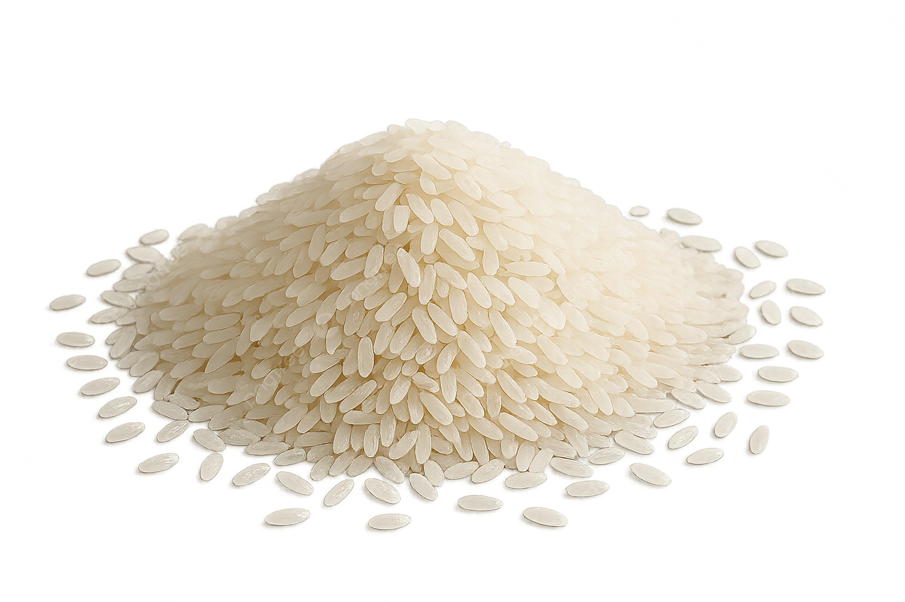
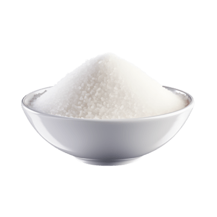

Arroz
Producto esencial de consumo diario, disponible para venta al detalle y al por mayor.
En Inversiones Cabrera ofrecemos productos de la canasta básica para apoyar las necesidades diarias de las familias y pequeños negocios.

Producto esencial de consumo diario, disponible para venta al detalle y al por mayor.

Alimento básico muy solicitado por las familias dentro de la canasta básica.

Producto de uso frecuente en el hogar, ideal para compras básicas y abastecimiento.

Artículo alimenticio esencial que forma parte de las compras comunes del hogar.

Producto de primera necesidad para el hogar y negocios, disponible en la bodega.

También contamos con otros artículos esenciales para cubrir las necesidades del día a día.